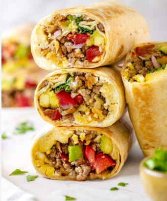
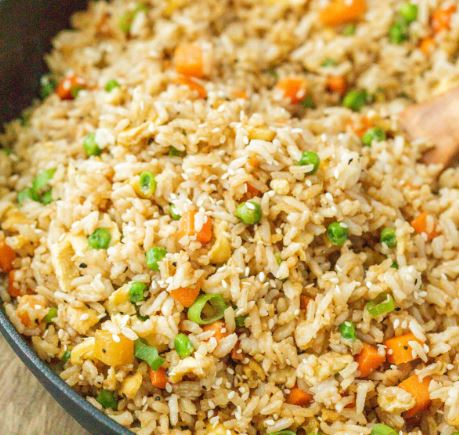
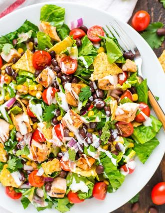
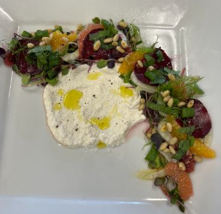
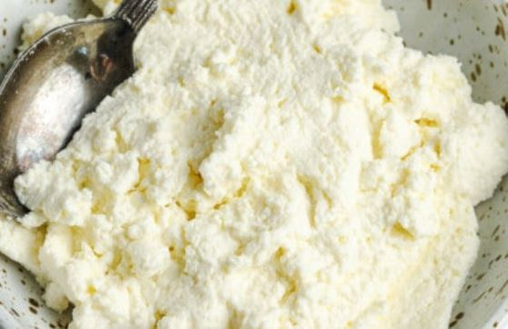
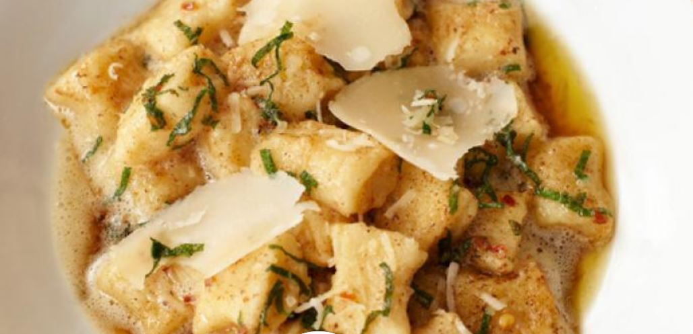
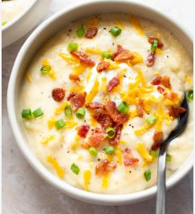
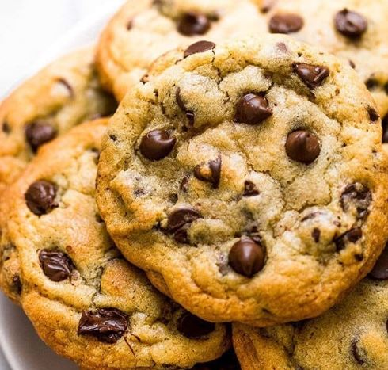

Pinch the top of the knife near the handle with the side of the index and thumb
Rest your hand comfortably on the knife
Hold the knife firmly, making smooth and smart cuts
Knife Cuts
There are many typical knife cuts used in recipes
The video describes how to perform certain cuts
Why does it matter?
Knife Cuts are part of the fundamentals of cooking
It allows for certain tastes, textures, and consistencies to shine in a dish
Fabricating a Chicken
What does it mean to Fabricate a Chicken
Fabricating a chicken is a fancy way of saying sectioning
You cut the chicken in a way that the different secitons are seperated
Sections include breats, thighs, wings, and the drumsticks
Why should I know how to do this
Fabricating a chicken is not necessarily an important skill but it can be handy
Whole raw chickens tend to be cheaper than buying a full chicken cut apart
The video portrays the technique to fabricating a chicken
Breakfast
Quiche
Yeild: 48 mini quiches
Ingredients
2 Chilled Unbaked Pie Crusts
4 Large Eggs
1/2 Cup Whole Milk
1/2 Cup Heavy (Whipping) Cream
1/4 teaspoon each, salt and pepper
3/4 Cup Add-ins (Meat, Greens, Peppers, etc.)
1/2 Cup Shredded cheese
Instructions
In a large bowl, whisk eggs, milk, cream, salt, and pepper, until combined, cover and refrigerate
Preheat oven to 375°F and grease muffin pans
Roll out the chilled dough in sections. Mold the dough in the small pie crusts
Press the crusts in the greased ban and flatten to remove airpockets. Pour the egg filling on top and top with add-ins and cheese
Bake until the center is set and edges slightly brown, around 25-28 minutes.
Breakfast Burritos
Yeild: 2 Burritos
Ingredients
1 Cup Hashbrowns
2 Large Eggs
2 Strips of Bacon
2 Sausages
1/4 Cup Cheese
1/4 Cup Salsa
2 Tortilla
Unsalted Butter
Salt and Pepper
Instructions
Grease a medium size sauce pan and cook hashbrowns over high heat. Once done, move to a seperate bowl
Cook bacon in the same pan on medium heat, adding in the sausage half way through bacon cook time. After, move meat to the sepearte bowl
Using some left over grease, scramble eggs. Add eggs to the bowl
Lightly toast the tortillas on the pan using butter
Warm up the ingredients on the pan, seasoning to taste. Add the ingredients along with the cheese and salsa to the tortilla and wrap it up.

Lunch

Fried Rice
Yield: 4 bowls
Ingredients
2 Tablespoons Butter
3 Large Eggs
Optional (Meat)
2 Carrots, Diced
1 Onion, Diced
3 Cloves Garlic, Minced
1 Cup Peas
4 Cups Day-Old Rice
3 Tablespoons Soy Sauce
2 Tablespoons Oyster Sauce
1 teaspoon Sesame Oil
Green Onions, Sliced
Instructions
Use half the butter to grease the pan. Scramble eggs and move to a seperate bowl
(Optional) Cook the meat in the pan and move to the seperate bowl afterward
Add the remaining butter to the pan along with the carrots and onions and cook until tender, about 3-4 minutes. Stir in the garlic and cook for an additional minute
Add the chilled rice and peas and sauté for 3-4 minutes. Rice should start to brown
Add the eggs and (Optional) Meat, to the pan and stir in the soy sauce, oyster sauce, and sesame oil. Cook for 1-2 minutes
Remove from heat and garnish the dish with green onions
Barbeque Chicken Salad
Yeild: 4 Servings
Garden Herb Ranch Dressing
Ingredients
1/2 Cup Mayonnaise
1/2 Cup Sour Cream
1/4 Cup Buttermilk
3 Tablespoons Fresh Minced Parsley
1 1/2 teaspoons Fresh Minced Dill
1 1/2 teaspoon Apple Cider Vinegar
1/2 teaspoon Worcestershire Sauce
1/2 teaspoon Garlic Powder
1/4 teaspoon Onion Powder
1/4 teaspoon Salt
Ground Pepper To taste
Instructions
Whisk together mayonnaise, sour cream, and buttermilk until smooth
Stir in the rest of the ingredients and blend well
Cover and refrigerate. If too thick, thin out the dressing with a splash of buttermilk
In a medium bowl, whisk together mayonnaise, sour cream, and buttermilk until smooth
BBQ Sauce
Ingredients
1/2 Cup Brown Sugar
2 Tablespoons Cider Vinegar
1/4 Cup Ketchup
1 teaspoon Ground Dry Mustard
1 teaspoon Worcestershire Sauce
1 teaspoon Horseradish Sauce
Instructions
Mix ingredients in a small saucepan
Cook over medium heat until it simmers and thickens. Then remove from heat
Fried Tortilla Strips
Ingredients
Vegetable Oil
4 Corn Tortillas, Cut in Half and into 1/4 inch Strips
Salt to Taste
Instructions
Heat the oil to 375°F over medium heat
Fry the strips until evenly golden, about 1-2 minutes. Remove and salt
Garlic BBQ Chicken
Ingredients
1 Tablespoon Olive Oil
2 Cloves Garlic, Minced
1 Tablespoon Soy Sauce
2 teaspoons Salt
1 Pound Chicken Breasts
Instructions
Preheat the broiler. Mix the ingredients in a bowl, set aside for 10 minutes to marinate
Broil chicken breasts until cooked, 5-6 minutes per side
Dice the chicken breasts and toss with barbeque sauce
For the Salad
Ingredients
10 Ounces Romaine Lettuce, Squared
1/2 Cup Montery Jack Cheese, Shredded
1/2 Cup Black Beans
1/2 Cup Sweet White Corn Kernels
1/2 Cup Jicama, Medium Dice
3 Tablespoons Cilantro and Basil, Cut
Garlic Herb Ranch Dressing
Tortilla Strips
BBQ Chicken
1 Tomato, Diced
1 Tablespoon Cilantro, Chopped
Instructions
In a mixing bowl, toss the cold ingredients and half of the tortilla strips
Serve and top with BBQ Chicken, tomatoes, tortilla strips, and cilantro

Dinner

Citrus Fennel Salad w/ Housemade Ricotta
Yield: 2 Plates (This is my Competition Dish)
Dressing
Ingredients
1 Tablespoon Ginger, Minced
3 Tablespoons Olive Oil
3 Tablespoons Apple Cider Vinegar
2 Tablespoons Honey
Salt and Pepper To Taste
Instructions
Mix together the ingredients until smooth, season to taste
The Salad
Ingredients
Ricotta
1/2 Chiogga Beet, Thinly Sliced
1/2 Fennel Bulb, Thinly Sliced
1/2 Navel Orange, Supreme
1/2 Cara Cara Orange, Supreme
1/2 Ruby Red Grapefruit, Supreme
1 teaspooon Pine Nuts, Toasted
1 teaspoon Mint, Chiffonade
1 teaspoon Fennel Fronds
1 teaspoon Scallions (Green), Sliced
1 Handfull Micro Greens
Instructions
Marinate the Fennel and beets with some of the dressing
Plate ricotta in the center of the plate, season with salt, pepper, and olive oil
Place the micro greens, fennel, citrus, and beets in a semi circle around cheese
Dress the greens and citrus and top with pine nuts, mint, fennel fronds and scallions
Housemade Ricotta
Yield: 2 Servings (Pairs well with dish above)
Ingredients
3 Cups Milk
2 Lemons, Squeezed
Salt and Pepper To Taste
Instructions
Fill a sauce pan with the milk and heat over medium-high heat
When the milk starts to bubble a good amount and curdle a bit, pour in the lemon juice
Pour the mixture over Cheese Cloth. Strain the mixture with a friend, moving the cheese in the cloth
Once most liquid is gone, Scrape the cheese into a bowl and season to taste


Garlic Herb Brown Butter Gnoche
Yield: 4 Servings
Ingredients
3 Lage Russet Potatoes
1 1/2 Cup All-Purpose Flour
1 Large Egg
Kosher Salt
6 Tablespoons Salted Butter
1 Tablespoon Red Pepper Flakes
4 Sage Leaves, Thinly Sliced
1/2 Cup Parmesian Cheese, Grated/Shaved
Instructions
Preheat Oven to 375°F. Cover a baking pan with salt and nestle potatoes on top. Bake until fork-tender, about 45 minutes
Scoop potatoes insides into a ricer. Whisk the egg with some salt and drizzle over the potatoes
Knead mixture with flour until smooth dough, adding the extra 1/2 if still sticky
Cover with a towel and let rest for 10 minutes. Roll dough into snakes and cut into gnoche shapes
For the Sauce, brown the butter in a skillet over high heat, stirring until butter develops brown flecks and smells nutty
Boil the pasta in a pot of water. Let them sit at the surface for 30 seconds
Reheat the butter, adding the pasta, flakes, sage, some pasta water, and 1/2 of the cheese. Plate and top with rest of cheese
Loaded Baked Potato Soup
Yield: 4 Servings
Ingredients
4 Slices Bacon, Sliced
1/2 Cup Onions, Diced
2 Cloves Garlic, Minced
4 Cups Potatoes, Peeled, Chopped
3 CUps Chicken Broth
1/2 Cup Cheddar Cheese, Shredded
1/4 Cup Half & Half
Salt and Pepper To Taste
2 Green Onions, Thinly Sliced
Instructions
Cook bacon pieses in a pot on medium heat. Remove from pot
Add onions and garlic to the grease for about 3 minutes or when onions begin to soften, medium heat
Add potatoes and broth, bring to a boil then reduce to a simmer for 15-20 minutes, or until potatoes are mashable
Turn off heat and mash potatoes. Stir in half & half and most of the cheese, bacon, and green onions. Season to taste. If soup is too thick, add broth
Serve and top with remaining cheese, bacon, and green onions

Desserts

Chocolate Chip Cookies
Yield: 36 Cookies
Ingredients
2 Cups All-Purpose Flour
1 teaspoon Baking Soda
1 teaspoon Salt
1 Cup Unsalted Butter, Room-Temperature
1/2 Cup Sugar
1 1/4 Cup Light Brown Sugar
2 teaspoons Vanilla
2 Large Eggs
2 Cups Semisweet Chocolate Chips
Instructions
Preheat Oven to 350°F. Line baking sheets with parchment
Mix flour, baking soda, and salt in a medium bowl
Beat butter, sugar, and brown sugar until creamy, about 2 minutes. Add eggs and vanilla.
Slowly add dry ingredients to the mixer. Add in Chocolate Chips. Refrigerate dough for best results
Scoop out onto baking sheets and bake for 11-13 minutes, or until golden brown
Grandma's Caramel Recipe
Yield: Pan of Caramel
Ingredients
1 Cup Light Corn Syrup
1 Cup Butter
2 Cups Brown Sugar
1 Can Sweentend Condensed Milk
Instructions
Mix all ingredients and stir constantly over medium heat
Cook to hard ball stage (250°-266°)
If you dont have a candy thermometer, once you see one bubble, set a timer for 12 minutes go from there
Pour into a buttered 9x13 pan. Let the caramel cool down